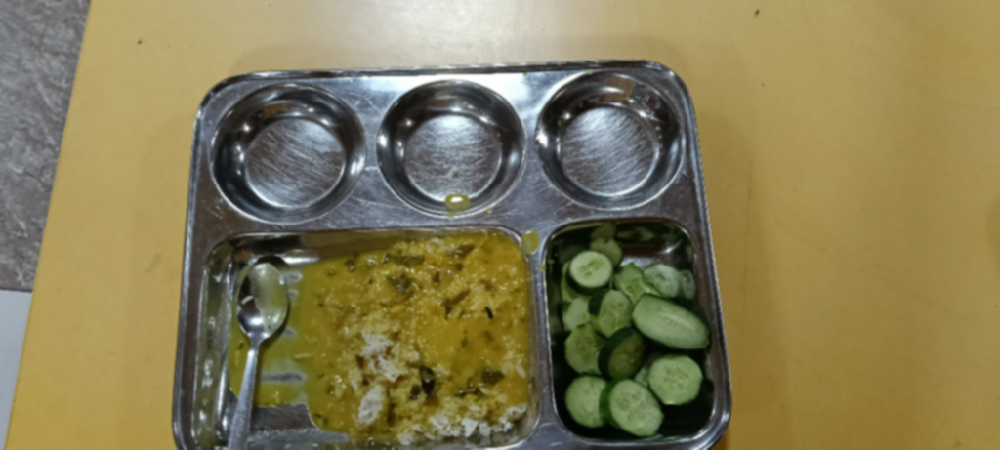
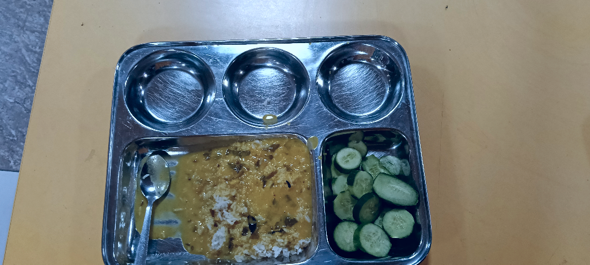
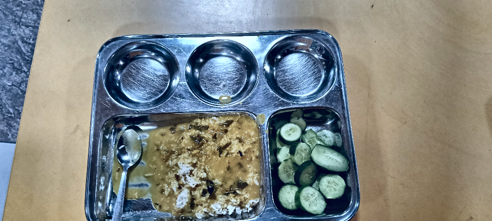
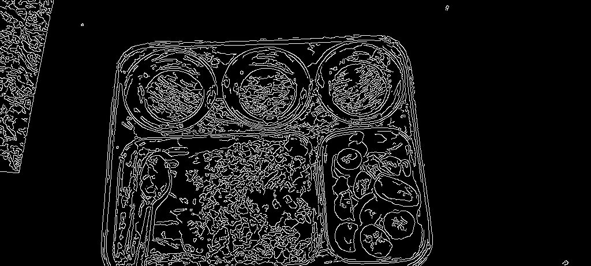
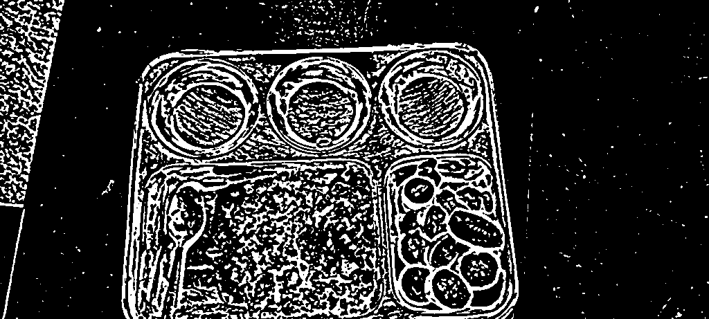
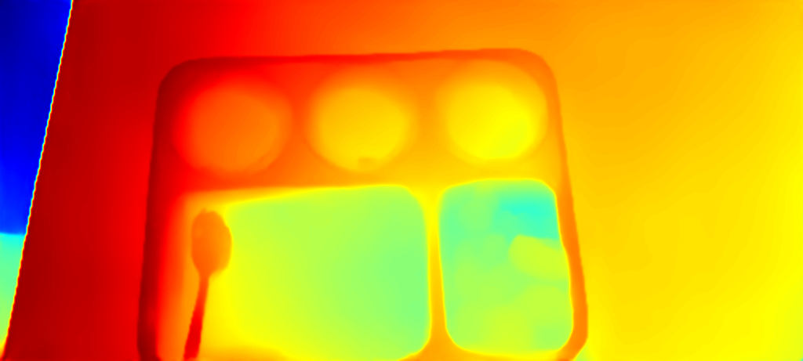
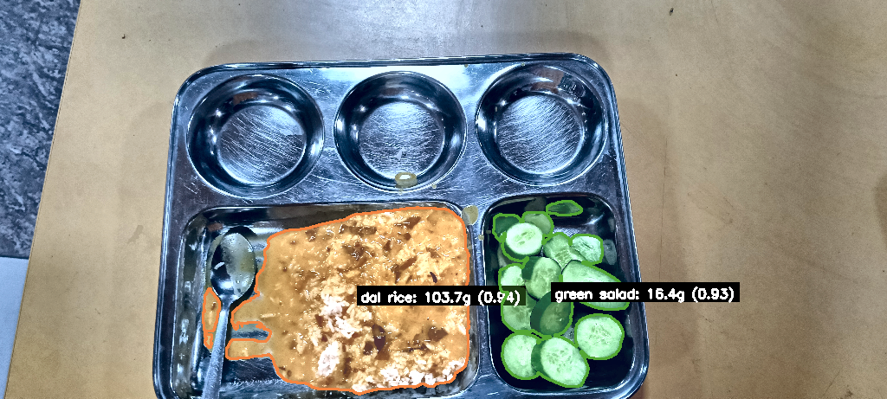

{
"resolution": "4080x1840",
"channels": 3,
"dtype": "uint8",
"expected_items": [
"dal",
"steamed rice",
"green salad"
],
"plate_profile": null,
"debug": true
}






[]
{
"item_id": "dal rice_1",
"area_pixels": 47984,
"estimated_height_cm": 1.576,
"volume_estimate_ml": 90.2,
"density": 1.149,
"mass_g": 103.7,
"class_label": "dal rice",
"class_confidence": 0.8779,
"depth_stability": 1.0,
"scale_confidence": 1.0,
"composite_confidence": 0.937,
"prior_applied": true,
"diagnostics": {
"original_sam3_query": "curry and rice",
"candidate_labels": [
"curry and rice"
],
"menu_matching_result": "dal rice",
"final_food_label": "dal rice",
"confidence": 0.8779,
"uncertainty": 0.1221,
"original_mask_id": "mask_00",
"grouped_instance_id": "inst_1",
"fragment_count": 1,
"decision_reason": "SINGLE_INSTANCE"
},
"fragment_count": 1
}{
"item_id": "green salad_2",
"area_pixels": 21241,
"estimated_height_cm": 0.915,
"volume_estimate_ml": 27.3,
"density": 0.6,
"mass_g": 16.4,
"class_label": "green salad",
"class_confidence": 0.8679,
"depth_stability": 1.0,
"scale_confidence": 1.0,
"composite_confidence": 0.9316,
"prior_applied": true,
"diagnostics": {
"original_sam3_query": "cucumber",
"candidate_labels": [
"cucumber"
],
"menu_matching_result": "green salad",
"final_food_label": "green salad",
"confidence": 0.8679,
"uncertainty": 0.1321,
"original_mask_id": "mask_01",
"grouped_instance_id": "inst_0",
"fragment_count": 14,
"decision_reason": "FRAGMENT_GROUPED_14_PIECES"
},
"fragment_count": 1
}
{
"food_items": [
{
"name": "dal rice",
"volume_ml": 90.2,
"mass_g": 103.7,
"calories": 128.6,
"protein": 5.0,
"carbs": 20.7,
"fat": 2.5,
"confidence": 0.937,
"class_label": "dal rice",
"class_confidence": 0.8779,
"top_k": [
{
"label": "dal rice",
"confidence": 0.8779,
"raw_similarity": 0.8779
}
],
"identification_status": "recognized",
"menu_match": true,
"matched_menu_item": "dal rice",
"identification_confidence": 0.8779,
"segmentation_confidence": 0.8779,
"association_confidence": 1.0,
"menu_match_confidence": 1.0,
"depth_confidence": 1.0,
"scale_confidence": 1.0,
"diagnostics": {
"original_sam3_query": "curry and rice",
"candidate_labels": [
"curry and rice"
],
"menu_matching_result": "dal rice",
"final_food_label": "dal rice",
"confidence": 0.8779,
"uncertainty": 0.1221,
"original_mask_id": "mask_00",
"grouped_instance_id": "inst_1",
"fragment_count": 1,
"decision_reason": "SINGLE_INSTANCE"
},
"fragment_count": 1,
"food_name": "dal rice",
"instance_count": 1
},
{
"name": "green salad",
"volume_ml": 27.3,
"mass_g": 16.4,
"calories": 4.9,
"protein": 0.2,
"carbs": 0.8,
"fat": 0.1,
"confidence": 0.9316,
"class_label": "green salad",
"class_confidence": 0.8679,
"top_k": [
{
"label": "green salad",
"confidence": 0.8679,
"raw_similarity": 0.8679
}
],
"identification_status": "recognized",
"menu_match": true,
"matched_menu_item": "green salad",
"identification_confidence": 0.8679,
"segmentation_confidence": 0.8679,
"association_confidence": 1.0,
"menu_match_confidence": 1.0,
"depth_confidence": 1.[
{
"step": "Input",
"message": "Original image saved",
"params": {
"resolution": "4080x1840"
},
"elapsed_s": 0.2976,
"input_file": null,
"output_file": "original.png",
"timestamp": "2026-11-12T18:59:57.864271"
},
{
"step": "Pipeline",
"message": "Step 1 — Preprocessing & Perspective Warp",
"params": {},
"elapsed_s": null,
"input_file": null,
"output_file": null,
"timestamp": "2026-11-12T18:59:57.864271"
},
{
"step": "Quality Gate",
"message": "PASS",
"params": {
"blur_score": 303.23,
"tilt_deg": 3.0
},
"elapsed_s": null,
"input_file": null,
"output_file": null,
"timestamp": "2026-11-12T18:59:58.095279"
},
{
"step": "Preprocessing",
"message": "Resize applied",
"params": {
"original": "4080x1840",
"target_long_edge": 1024,
"scale": 0.251
},
"elapsed_s": 0.0007,
"input_file": null,
"output_file": "01_resized.png",
"timestamp": "2026-11-12T18:59:58.119257"
},
{
"step": "Preprocessing",
"message": "Gaussian blur applied",
"params": {
"kernel": 5
},
"elapsed_s": 0.0006,
"input_file": null,
"output_file": "02_denoised.png",
"timestamp": "2026-11-12T18:59:58.142042"
},
{
"step": "Preprocessing",
"message": "LAB color normalization applied",
"params": {},
"elapsed_s": 0.025,
"input_file": null,
"output_file": "03_color_normalized.png",
"timestamp": "2026-11-12T18:59:58.204591"
},
{
"step": "Preprocessing",
"message": "CLAHE contrast enhancement applied",
"params": {
"clip_limit": 2.0,
"tile_grid": "8x8"
},
"elapsed_s": 0.0029,
"input_file": null,
"output_file": "04_contrast_enhanced.png",
"timestamp": "2026-11-12T18:59:58.233580"
},
{
"step": "Preprocessing",
"message": "Canny edge detection",
"params": {
"low": 50,
"high": 150
},
"elapsed_s": 0.0| Step | Message | Params | Time |
|---|---|---|---|
| Input | Original image saved | {"resolution": "4080x1840"} | 0.2976s |
| Pipeline | Step 1 — Preprocessing & Perspective Warp | — | — |
| Quality Gate | PASS | {"blur_score": 303.23, "tilt_deg": 3.0} | — |
| Preprocessing | Resize applied | {"original": "4080x1840", "target_long_edge": 1024, "scale": 0.251} | 0.0007s |
| Preprocessing | Gaussian blur applied | {"kernel": 5} | 0.0006s |
| Preprocessing | LAB color normalization applied | — | 0.0250s |
| Preprocessing | CLAHE contrast enhancement applied | {"clip_limit": 2.0, "tile_grid": "8x8"} | 0.0029s |
| Preprocessing | Canny edge detection | {"low": 50, "high": 150} | 0.0074s |
| Preprocessing | Warp skipped (no 4-pt contour) | {"warped": false} | — |
| Preprocessing | Complete | {"output_size": "1024x461"} | 0.4065s |
| Pipeline | Step 2 — Compartments & Scale | — | — |
| Compartment Detection | Detected 0 compartments | {"min_area_frac": 0.02, "max_area_frac": 0.9, "compartment_count": 0} | 0.0057s |
| Scale Calibration | Ellipse-based calibration succeeded | {"cm_per_pixel": 0.03747, "method": "ellipse"} | — |
| Compartment Detection | Scale computed | {"cm_per_pixel": 0.03747, "pixel_area_cm2": 0.0014041, "compartments": 0, "scale_confidence": 1.0} | 0.0434s |
| Pipeline | Step 3 — Depth Estimation | — | — |
| Depth Estimation | Depth Anything depth map computed (smoothed) | {"device": "cuda", "is_metric": true, "shape": [461, 1024], "min": -106.648, "max": -48.387} | 0.1273s |
| Depth Normalization | Surface normal plane subtracted from depth | {"baseline": -61.653, "fitted_plane": true, "is_metric": true} | 0.0217s |
| Depth Metric [cm] | Metric depth height in cm directly computed | {"cm_per_pixel": 0.03747, "min_cm": 0.0, "max_cm": 14.02, "mean_cm": 3.0} | 0.0019s |
| Depth Estimation | Complete | — | 0.2145s |
| Pipeline | Step 4–6 — SAM 3 Food Identification & Segmentation | — | — |
| SAM3 | Identified 2 food items (2 recognized, 0 unlisted, 0 uncertain) | — | 14.7072s |
| Pipeline | Step 7 — Volume & Mass Estimation | — | — |
| Volume Estimation | Computed mass for 2 items | {"total_items": 2} | 0.0083s |
| Pipeline | ✅ Pipeline complete | {"total_food_items": 2, "avg_confidence": 0.9343, "scale_method": "ellipse"} | 15.7416s |